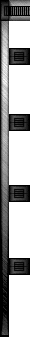

|  |
| |
|
|
|
Action Skinners Anonymous is a (new?) group of skinners and modellers for the mods AQ2 and AHL. They are looking for some help to do some Quake2/Half-Life modelling and skinning. You can visit their page here.
-kramed
A new version ofMilk Shape 3D has been released today. Milk Shape is a free model editor for Half-Life. There are a bunch of tutorial links posted on the site if your interested on learning howto use it. Grab it here.
-kramed
Converted2 has posted a article on skining meshes in 3D Studio Max. Pretty good read for anyone interested. Also has some 3D Max plugin information.
-kramed
Cold Fusion has gotten a must read tutorial for anyone learning or wanting to learn howto use Milk Shape, a free model editor that supports Half-Life. You can view the tutorial here.
-kramed
Cold Fusion has has posted some tutorials for a free Half-Life editing program called Milk Shape (link below and on CF page). You can read all the tutorials at Codl Fusions here.
-kramed
Cold Fusion has gotten some more tutorials from Scarecrow who has modeled many Half-Life player models. These tutorials include setting up your workspace to play testing your model. Anybody who is interested in Half-Life modeling should check these out here.
-kramed
HAPPY FATHERS DAY....and for all you fathers who play action quake, I know one (SHOUT OUT TO MY BUD SHITHAPPENS), heres a goodie. The M16 model...which was a modified m4 by muz I have finally finished finishing. Get it on the weapons page. Once again Happy Fathers Day.
-[-ZeUs0-]
New design. Looks pretty kick arse to me. Props goto me :), ViperX and Scuzzy for helping. Nothing much changed cept the design. Oh well. Keep coming back for more news.
-kramed
VK-Selflove has fixed the sydney model again!! holy crap. I didnt know there was that much to fix but apparently there is :) This time Selflove fixed the annoying Akimbo pistol problem. Grab this fix off the PPMs page. It is the Sydney #3. Same link as before just with an updated zip.
-kramed
Cloud (the author of the superhawk magnum) has started a new replacement model for Action Quake2. A Desert Eagle handgun (see pic). Red13 will be doing the skin like he did for the superhawk. The Desert Eagle will replace the MK23 pistol and after Cloud is done that he will make the akimbo pistols out of it. Sounds good eh?
I fixed some of the broken links on the pages. Also ViperX has completed some graphics for this page. Ill post them as soon as I can.
-kramed
I fixed the link to the Sydney #3 model. Grab
it on the PPMs page. I also killed the reviews page
cause Im not writing reviews :). I made a links page for all you wanna be
skinners and modelers (like me) with some tutorials and tools links. Link
on side bar. Also ViperX is going to start working on some graphics for
the site so it dosn't look so bad. hehe.
-kramed
Added a counter today. Wow big news eh? eXXon
has posted word that his anaconda (6 shooter) model should be done in about
2 weeks. This model will replace the Sniper Rifle (like the superhawk).
There is a version of the model out but it is not done so it sucks. You
can still get it at the guild
tho if your desperate.
-kramed
Got a email a few days ago about a sydney revision.
This revision changes the skin map and fixes some problems with sydney skins
and their alignment. This change is very noticible in the hair. Everyone
who uses sydney should get this. It also comes with a ton of cool skins.
Grab it on the PPMs page.
-kramed
Got this page done and up finally. This is
where you will find all of the models on AQ2OG. If you have a model there
is a submit page here.
-kramed
|
|
|
|
|
|
{kind=link}